The system consists of 8 Julia source modules + 2 entry-point scripts, loaded in dependency order by Include.jl.
| File | Role / 职责 |
|---|---|
Include.jl | Environment setup: activate project, load packages, include src modules in dependency order |
src/Files.jl | Data loaders: JLD2 market data, SAGBM parameters CSV, Finviz screener CSV |
src/DataDownload.jl | Yahoo Finance API: download prices and dividends with CSV caching |
src/Compute.jl | Quantitative: log-growth matrix, rolling volatility, dividend yield, IV calibration, correlation matrix |
src/OptionPricing.jl | CRR American option pricing, Greeks (Δ,Γ,Θ,ν), strike_from_delta, implied vol solver |
src/EarningsCalendar.jl | Earnings date management: CSV / estimation / Yahoo Finance fetch, near_earnings detection |
src/MonteCarloSim.jl | GBM simulation, regime-switching GBM, correlated multi-asset GBM, HMM, stress testing |
src/WheelEngine.jl | Core backtest engine: state machine, open/close/roll/repair, risk overlays, NAV computation, reporting |
Backtest.jl | Backtest entry point: universe construction → data loading → simulation → reporting |
Wheel Strategy Code | Live trading template: daily signal generation for real-time operations |
| Source | Description | Loader |
|---|---|---|
| JLD2 Market Data | S&P 500 2025 daily OHLC from Polygon.io (course-provided), for log_growth_matrix | Files.jl → MyTestingMarketDataSet() |
| SAGBM Parameters CSV | Pre-computed drift μ and volatility σ per ticker (2014–2024), fallback source | Files.jl → load_sagbm_parameters() |
| Finviz Screener CSV | Dividend yield, market cap, volume for Safe-sleeve selection | Files.jl → load_finviz_screener() |
| Yahoo Finance Prices | Daily OHLC + adj_close, cached to data/prices_2025/*.csv | DataDownload.jl → download_price_data() |
| Yahoo Finance Dividends | Ex-dividend dates + amounts, cached to data/dividends_2025/*.csv | DataDownload.jl → download_dividends() |
| Yahoo Finance VIX | VIX index daily data for reference | DataDownload.jl |
| SPY Prices | S&P 500 ETF for benchmark buy-and-hold comparison | DataDownload.jl |
| Sleeve | # Names | Allocation | Per-Name Weight | Selection Criteria |
|---|---|---|---|---|
| Safe | 25 | 60% | 2.4% | Low volatility, high dividend yield (≥3%), deep options market |
| Aggressive | 10 | 40% | 4.0% | Top-quintile volatility, deep options market, sector diversity |
Initial NAV: $600,000,000 | Per-name cap: ≤5% NAV | Sector cap: ≤25%
| Block | Allocation | Purpose |
|---|---|---|
| Block A (Hold) | 50% of ticker allocation | Buy-and-hold for dividends + capital appreciation. No options sold. |
| Block B (Wheel) | 50% of ticker allocation | Active Wheel cycle: Sell Put → Assigned → Sell Call → Called Away → repeat |
PEP, KO, PG, JNJ, CME, CMCSA, VZ, T, IBM, MO, PM, MDLZ, EXC, KMB, PAYX, TROW, PFG, SO, DUK, ED, LNT, GIS, CAG, REG, CPB
TSLA, NVDA, AMD, AAPL, MSFT, AMZN, GOOG, META, NFLX, DVN
Computes excess log returns for all tickers from the JLD2 dataset. Output is a (days × tickers) matrix used for cross-sectional volatility estimation.
Annualized rolling volatility using a trailing 30-day window of daily log returns. Computed per ticker per trading day. Floor at 1% to avoid degenerate pricing.
Continuous dividend yield passed to CRR lattice for accurate American option valuation around ex-dividend dates.
Data needed for better calibration:
N = 50 steps. All pricing uses American exercise exclusively — European pricing is never used because the Wheel trades American-style equity options where early exercise matters, especially for puts on dividend-paying stocks.
| Greek | Method | Formula |
|---|---|---|
| Delta (Δ) | CRR first level | Δ = (V_u − V_d) / (S·u − S·d) |
| Gamma (Γ) | Central finite diff | Γ = (V(S+ε) − 2V(S) + V(S−ε)) / ε² |
| Theta (Θ) | Forward diff | Θ = V(T − 1/365) − V(T) |
| Vega (ν) | Central finite diff | ν = (V(σ+0.01) − V(σ−0.01)) / 0.02 |
Input: target |Δ| (e.g., 0.25), current price S, σ, T.
Method: Binary search over K ∈ [0.5×S, 2.0×S]. At each midpoint, compute CRR delta. Converge when K_hi − K_lo < $0.005.
Input: market option price, S, K, T.
Method: Binary search over σ ∈ [0.01, 3.0]. At each midpoint, price via CRR. Converge when σ_hi − σ_lo < 1e-6.
Each ticker's Block B has 1–3 ladder slots, each running an independent Wheel cycle. This enables temporal diversification of expiry dates.
| Step | Action | Reference |
|---|---|---|
| 1 | Deduct daily management fee (0.68% annual / 252) | PDF §5 |
| 2 | Compute trailing VaR/ES → throttle if exceeded (VaR > 2.5%, ES > 3.5%) | PDF §4, §6 |
| 3 | Compute drawdown_pct → feed into adaptive delta | PDF §3 |
| 4 | Per ticker × slot: deduct borrow cost (0.5% annual on held shares) | PDF §7A |
| 5 | Check dividends → credit Block A + Block B held shares | PDF §2 |
| 6 | Check option expiry → assignment (put ITM) or call-away (call ITM) | PDF §2 |
| 7 | Check 4 roll triggers → roll if triggered | PDF §3 |
| 8 | If no open option: check risk overlay, earnings, name/sector caps → open_option! | PDF §3–6 |
| 9 | Check cost-basis repair (loss ≥ 10% → average down, max 2×/quarter) | PDF §6 |
| 10 | Record DailyRecord: NAV, Cash, Shares, OptionMTM, Greeks, cumulative income/costs | — |
| Control | Condition | Effect |
|---|---|---|
| Adaptive Tenor | σ > 0.40 → shortest tenor; σ < 0.15 → longest tenor | High vol = shorter expiry (more premium); Low vol = longer expiry (fewer costs) |
| Adaptive Delta | σ, near_earnings, drawdown → adjust t ∈ [0, 1] within delta range | High risk → lower delta (more OTM, safer) |
| Policy | Behavior |
|---|---|
:avoid | Skip opening new options within ±5 days of earnings |
:widen | Open options but reduce delta by earnings_wider_delta (more OTM) |
:reduce_size | Open options but reduce contracts to 50% (configurable) |
| Cost Component | Amount |
|---|---|
| Commission | $0.65 / contract |
| Exchange fee | $0.03 / contract |
| Clearing fee | $0.02 / contract |
| Bid-ask slippage | Volatility-adjusted spread model |
| Borrow fee | 0.5% annual on held shares |
| Management fee | 0.68% annual on NAV |
2-state Markov chain switching between normal (μ₁, σ₁) and stressed (μ₂, σ₂) regimes with transition probabilities p₁₂ and p₂₁.
| Scenario | Vol Multiplier | Drift Adjustment | Gap |
|---|---|---|---|
| Normal (baseline) | 1.0× | 0 | — |
| Vol Spike | 2.0× | 0 | — |
| Bear Market | 1.5× | −20% | — |
| Flash Crash | 2.0× | 0 | −10% at day 30 |
| Name Blowup | 1.5× | 0 | −30% at day 60 |
| Bull Squeeze | 1.5× | +30% | +15% at day 45 |
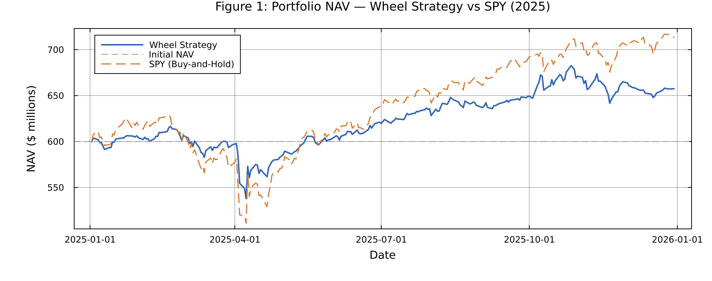
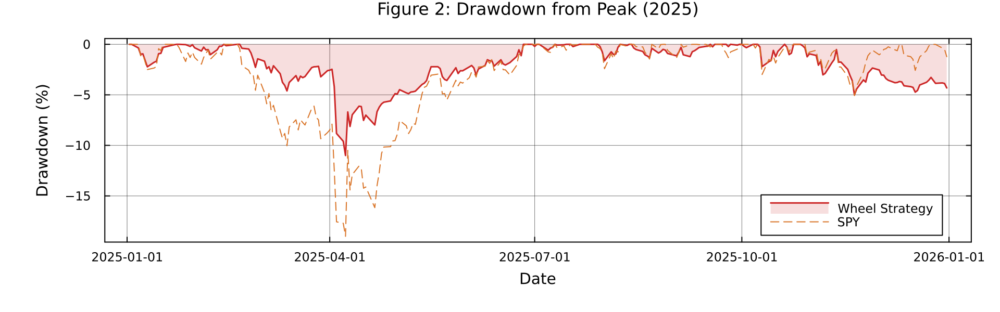
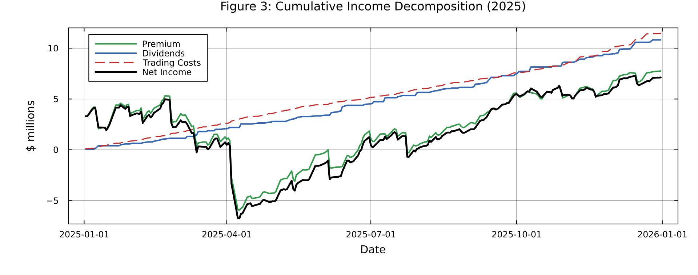
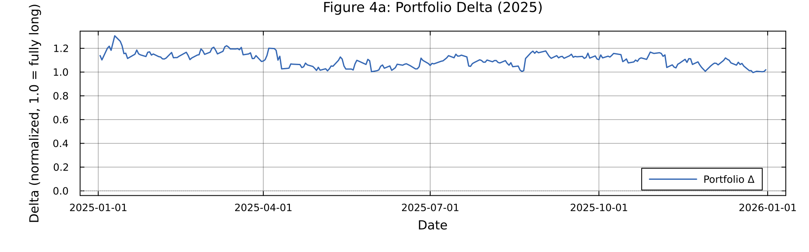
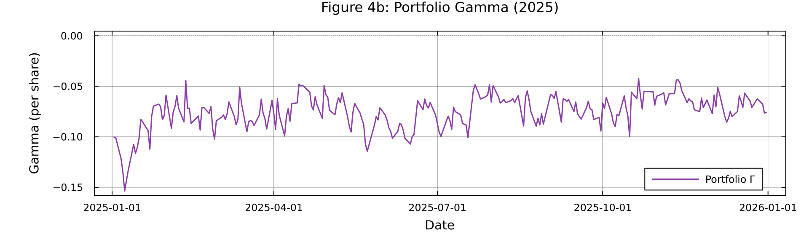
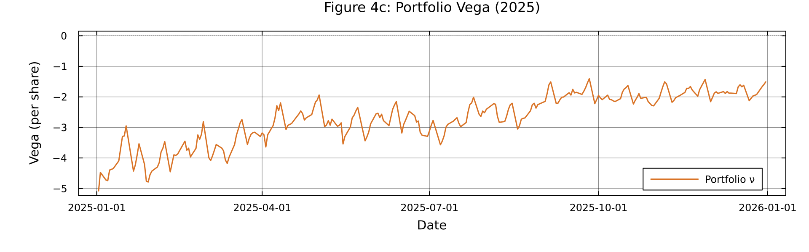
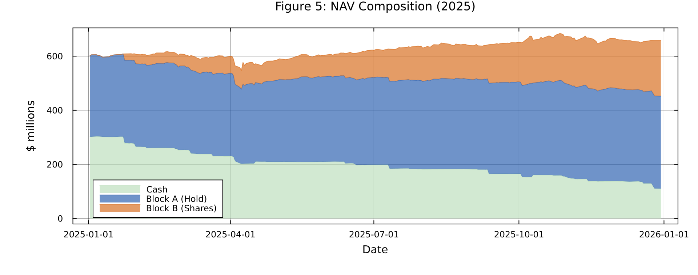
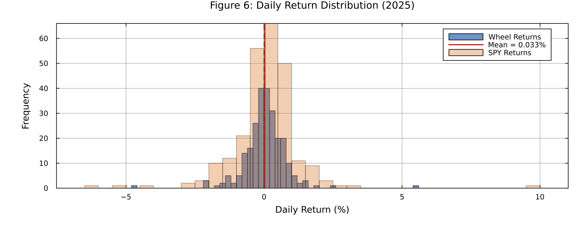
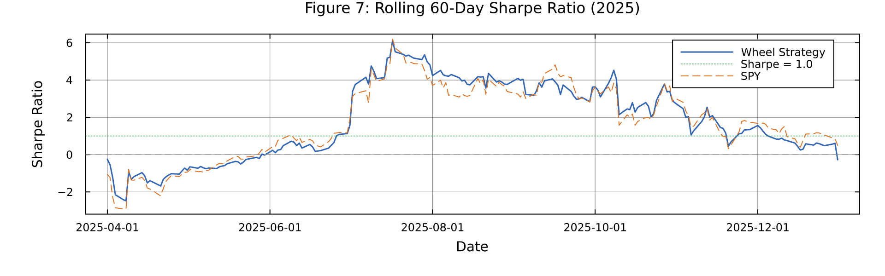
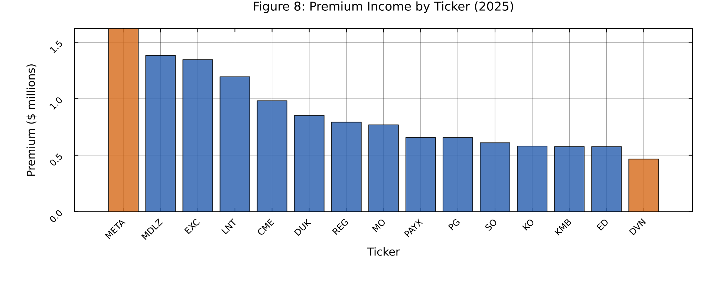
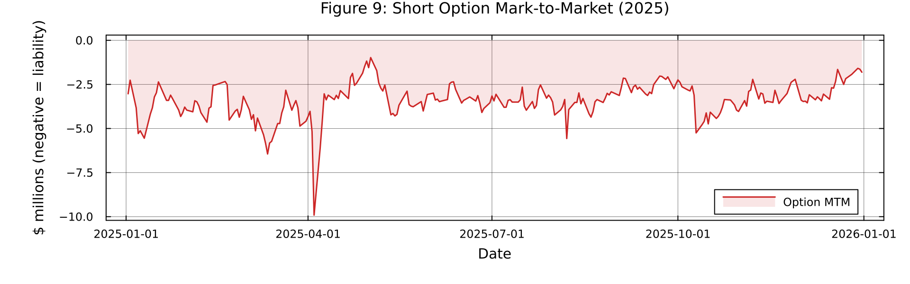
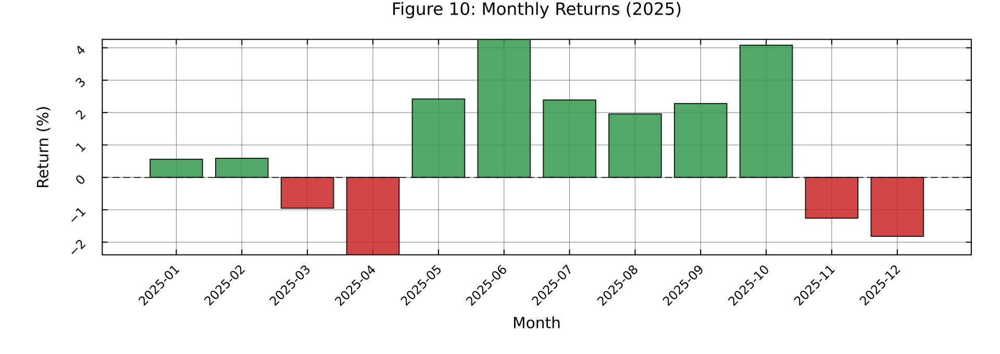
| File | Columns | Purpose / 用途 |
|---|---|---|
daily_nav_2025.csv |
Date, NAV, Cash, SharesValue, OptionMTM, BlockA_Value, CumPremium, CumDividends, CumCosts, Delta, Gamma, Vega, DailyReturn, SPY_NAV, SPY_Return, ExcessReturn | Day-level full dataset for any downstream analysis (Python/R/Excel). Foundation for all charts. |
ticker_performance_2025.csv |
Ticker, Sleeve, Sector, BlockA_Shares, Day1_Price, LastPrice, Premium, Dividends, Costs, Assigns, CallAways, Repairs, Trades, BlockA_PnL | Per-ticker attribution: which names contributed most premium, which were assigned/called-away most. |
| # | File | Content | Analysis Purpose |
|---|---|---|---|
| 1 | nav_curve_2025.png | NAV vs SPY | Core performance — did the strategy beat the benchmark? |
| 2 | drawdown_2025.png | Drawdown from peak | Risk control — max drawdown depth & recovery |
| 3 | income_decomposition_2025.png | Premium + Dividends − Costs | Income source decomposition, Distribution Yield validation |
| 4–6 | greeks_*.png | Portfolio Δ, Γ, ν | Directional risk, convexity risk, volatility risk monitoring |
| 7 | nav_composition_2025.png | Cash / Block A / Block B | Asset allocation visualization |
| 8 | return_distribution_2025.png | Daily return histogram | Return profile characterization |
| 9 | rolling_sharpe_2025.png | 60-day rolling Sharpe | Time-varying risk-adjusted performance |
| 10 | premium_by_ticker_2025.png | Top 15 by premium | Per-name contribution attribution |
| 11 | option_mtm_2025.png | Option liability | Outstanding short option exposure |
| 12 | monthly_returns_2025.png | Monthly return bars | Monthly performance review |
| CHEME-5660 Week | Topic | Implementation in System |
|---|---|---|
| Week 5b | GBM / SAGBM parameter estimation | log_growth_matrix(), simulate_gbm() |
| Week 6 | Multi-asset GBM + Cholesky decomposition | simulate_correlated_gbm(), compute_return_correlation() |
| Week 10 | CRR Binomial Lattice — American Options | crr_price() with dividend yield q |
| Week 11 | Greeks (Δ, Γ, Θ, ν) | crr_delta/gamma/theta/vega(), option_greeks() |
| Week 12b | Delta and hedging | crr_delta() → strike_from_delta() |
| Week 13 | HMM — Markov Models | fit_two_state_hmm(), classify_regime() |
| Component | Description |
|---|---|
| IV Calibration (VRP Model) | σ_RV → σ_IV conversion via Variance Risk Premium + term + skew + volvol adjustments |
| strike_from_delta | Bisection search to find K producing target |Δ| under CRR |
| estimate_implied_vol | Bisection on CRR to find σ matching market price (American IV solver) |
| Bid-ask spread model | Volatility-adjusted half-spread estimation |
| Fill rate model | Spread-based fill rate with vol penalty |
| Regime-switching GBM | 2-state Markov × GBM for regime-aware simulation |
| Earnings calendar estimation | SEC filing pattern-based quarterly date estimation |
| Cost-basis repair | Automated average-down when shares are ≥10% underwater |
| Adaptive tenor/delta | Vol-regime-aware selection of option tenor and delta target |
| Rolling IV computation | Convert time-series of σ_RV to σ_IV for all tickers |
| Priority | Improvement | Current State | Method |
|---|---|---|---|
| HIGH | IS/OOS Split + Walk-Forward Validation | Only in-sample 2025 testing | Use 2014–2024 for param optimization, 2025 for OOS validation. PDF §7A explicitly requires this. |
| HIGH | Integrate HMM Regime into Backtest | HMM is implemented but not integrated into run_backtest! | Daily classify_regime() → :stressed → reduce delta / extend tenor / pause selling puts. |
| HIGH | Real IV Data | Using fixed VRP multipliers (1.15×/1.25×) | Connect to CBOE, OptionMetrics, or broker API for actual IV surfaces. |
| MED | Multi-asset Correlated Stress Test | Stress tests are per-ticker or uniform | Use simulate_correlated_gbm() + industry correlations for joint stress. |
| MED | Execution Realism | Assumes close-price execution | Use open/VWAP/next-day-open price for more realistic fill simulation. |
| MED | Dynamic Rebalance | Weights fixed after initialization | Add monthly/quarterly rebalance of Block A/B proportions. |
| LOW | Stochastic Volatility (Heston) | Uses rolling realized vol | Replace simple GBM with Heston model for more accurate vol smile. |
| LOW | TWAP/VWAP Execution | Simple fixed slippage model | Connect real L2 data + optimal execution algorithms. |
| LOW | Live Broker API | Wheel Strategy Code is a template | Integrate Interactive Brokers TWS API (Julia IBApi.jl). |
| PDF Section | Requirement | Status |
|---|---|---|
| §2 Strategy | Wheel cycle: Short Put → Assigned → Covered Call → Called Away | ✅ Complete |
| §3 Portfolio | Safe/Aggressive sleeves, 5% name cap, sector cap, laddering | ✅ Complete |
| §4 KPIs | Distribution Yield, Premium Capture, Assignment Rate, Sharpe, VaR/ES | ✅ Complete |
| §5 Operations | Commissions, exchange fees, borrow fees | ✅ Complete |
| §6 Design Variables | Delta range, tenor, laddering, earnings policy, roll triggers, repair | ✅ Complete |
| §7A Testing | IS/OOS split, walk-forward | ⚠ Not Implemented |
| §7A Testing | Parameter sweep | ✅ Implemented (RUN_PARAMETER_SWEEP flag) |
| §7B Stress | Regime-switching GBM, gap scenarios, vol spike | ✅ Implemented (RUN_STRESS_TEST flag) |
| §7B Stress | IV surface calibration | ⚠ Partial — VRP model, not real IV data |
Wheel Strategy ETF Fund — System Report | Cornell CHEME-5660 | Generated March 2026